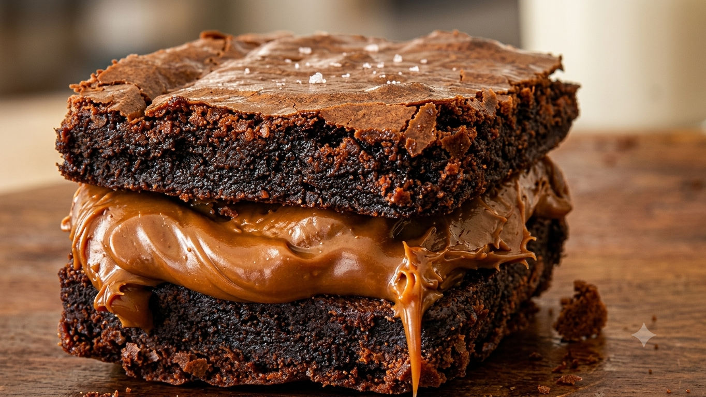
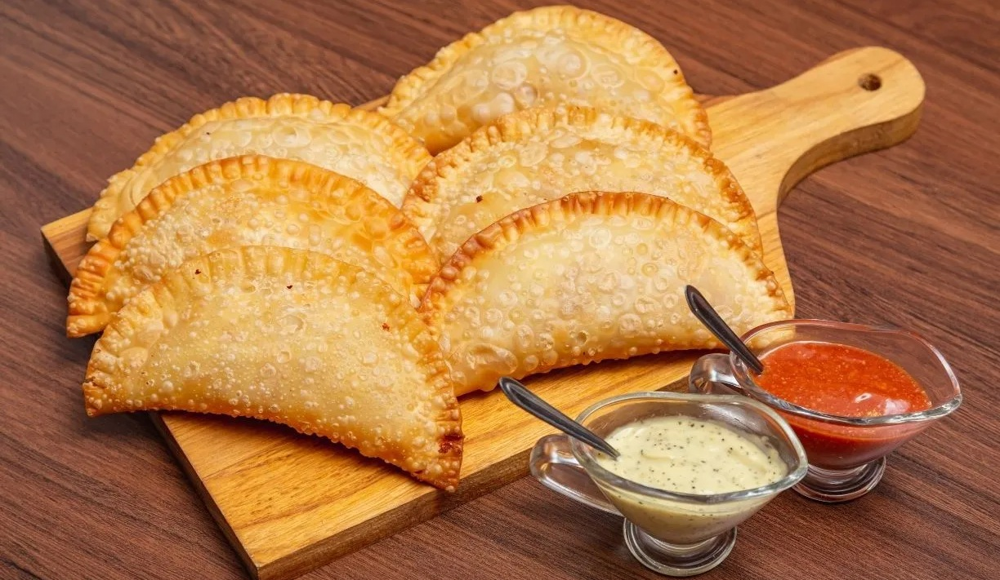

Mousse de Maracujá
Receita de Mousse de Maracujá (SUB-PÁGINA) Ver receita completa
Receita de Mousse de Maracujá (SUB-PÁGINA) Ver receita completa
WebLab - 2026

Um clássico brasileiro, super fofinho e com uma cobertura de chocolate irresistível.
WebLab - 2026

Uma sobremesa intensa, cremosa e deliciosa.
WebLab - 2026
O autêntico quitute mineiro: casquinha crocante por fora e um miolo maravilhosamente puxento por dentro.

WebLab - 2026

Aquele clássico irresistível com massa sequinha, cheia de bolhas e super crocante.